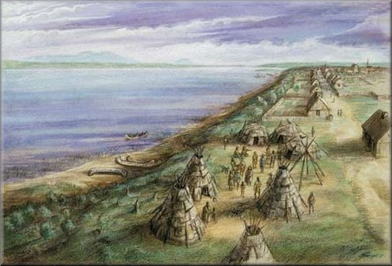
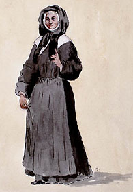
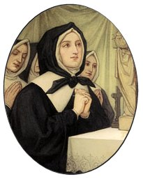

|
+
How
are we related to Marguerite Bourgeois?
Discover her life and work through excerpts from the
Dictionary of Canadian Biography
Marguerite and Ste-Catherine taffy
Marguerite and the Filles du Roi
Educating girls, a priority
Press photos from the early 20th century
Meeting Marguerite: two museums
BOURGEOYS, MARGUERITE,
known as du Saint-Sacrement, foundress of the Congrégation
de Notre-Dame de Montréal, born in Troyes, in Champagne (France),
on April 17, 1620, died and buried in Montréal
on January 12, 1700, beatified on November 12, 1950
and canonized on October 31, 1982.
 Marguerite Bourgeoys was born in France in the century of the Thirty
Years' War and the Fronde, in the age of the powerful and methodical
achievements of Richelieu and Colbert, the age of the great
mystics of the French school, Jean-Jacques Olier, Pierre de Bérulle,
Charles de Condren. Shaped by her surroundings and her times,
Marguerite Bourgeoys would be at once a great realist and a profound
mystic. She would also be something of a pioneer. Marguerite Bourgeoys was born in France in the century of the Thirty
Years' War and the Fronde, in the age of the powerful and methodical
achievements of Richelieu and Colbert, the age of the great
mystics of the French school, Jean-Jacques Olier, Pierre de Bérulle,
Charles de Condren. Shaped by her surroundings and her times,
Marguerite Bourgeoys would be at once a great realist and a profound
mystic. She would also be something of a pioneer.
Through her
father, Abraham Bourgeoys, master candle-maker and coiner at the
Troyes Mint, and through her mother, Guillemette Garnier,
Marguerite belonged to the French bourgeoisie of the 17th century. The detailed inventory of
Mme Bourgeoys's property and jewellery, and a study of the Garnier family, show the
standing of her parents' social connections and
the comfort in which they lived.
Until
1950, Marguerite Bourgeoys's biographers kept repeating that,
orphaned at 12, she had from then on been in charge of
running the household and raising her brothers and sisters.
Recently discovered documents show on the contrary that
Marguerite, the sixth of the 12 Bourgeoys children, was 19 when
her mother died, and that she had an older sister, Anne, still
at home in 1639.
It was in
1640 – Marguerite was then 20 – that
the first milestone came in the remarkable odyssey that would bring her
all the way to New France.
The Congrégation
de Notre-Dame, founded in 1598 by Alix Leclerc at
the urging of Father Pierre Fourier, had a convent in
Troyes. These cloistered nuns, who could not go out to
do their apostolic work outside the monastery, used
a middle course : a so-called extern congregation, a group of
young women who met at the monastery for religious
instruction and lessons in teaching.
« However much
they urged her », Marguerite Bourgeoys
had always refused to join the extern congregation, for
fear of « being taken for a bigot ». But in 1640, during
the Rosary procession, a sudden turn changed her
destiny. « We passed again, she writes, in front of the doorway
of
the Abbey of Notre Dame, where above the door there is a stone image
of the Virgin, and casting my eyes up to look at it I
found it very beautiful, and at the same moment I was so touched
and so changed that I no longer knew myself, and going back
home everyone could see it, and as I had been very lighthearted I was
welcomed among the other girls. »

Ville-Marie in the 17th century
Marguerite
Bourgeoys's first step was to join the extern
congregation. The director of the congregants was then Mother
Louise de Chomedey de Sainte-Marie, sister of Paul de Chomedey
de Maisonneuve, governor of Ville-Marie. Through her,
Marguerite heard about Canada, and was then introduced to
Maisonneuve when he passed through Troyes in 1652. Sister Louise de
Chomedey and a few companions begged Maisonneuve to take them
to Montréal. But he refused, saying that under present
conditions a religious community could not survive in
Ville-Marie. Marguerite Bourgeoys, then 33, offered
to go, and Maisonneuve accepted.
Strange
refusals of admission to the Carmelites and other contemplative
communities had left her free for Ville-Marie. In
February 1653 she left Troyes, and after many difficulties did not land in Quebec
until September 22. The
crossing had taken three months; the ship was wretched and plague broke out
on board, so Marguerite became a nurse.

Arrival
of Marguerite Bourgeoys in Ville-Marie in 1653 - Francis Back
On her
arrival in Ville-Marie, Marguerite Bourgeoys found no
children of school age, because of infant mortality :
« For about 8 years it had not been possible to raise
children ». In the meantime she made herself a big sister to the
settlers. Already on the ship her presence had been a sermon to them,
almost a conversion, for on their arrival « they were
changed like linen put through the wash ». In 1657
she seems to have graciously won them over to a work bee
to build the chapel of Notre-Dame-de-Bon-Secours
(the first stone church built on the island of Montréal), which,
much altered, still stands today on the same
spot. Her contemporaries' accounts agree that in
every situation people turned to Marguerite, a true
social worker before the term existed.

Apse of the 1675 chapel. Remains of the 1709 palisade
But the
mission her tastes and natural gifts drew her
to was teaching. On April 30, 1658,
Marguerite Bourgeoys was at last able to welcome her first pupils,
in a stable that Maisonneuve had given her for want of anything better.
The deed of grant describes it as « a stone building
thirty-six feet long by eighteen wide, located in
Ville-Marie, near the Hôpital Saint-Joseph ».
Marguerite, however, was looking further ahead and on a larger scale, for in
that same year, 1658, she went back to France « with the intention
of bringing back a few girls to help me teach the children ».
She brought back three good women of the middle class, Edmée Châtel, Marie Raisin,
Anne Hiou, as well as a strong young « fille forte » for the
heavy work.  With her companions' help, Marguerite
Bourgeoys would soon be able to take in the filles du
roi (King's Daughters), the young
orphans Louis XIV sent to New France « to
start families ». She would go « fetch them at the
water's edge » and prepare them for their future role. It was to her house
that the settlers of Ville-Marie came to find a wife, not without
undergoing a strict examination. They seem, moreover, to have appreciated this
exceptional marriage bureau as well as the teaching given
to the children at Marguerite Bourgeoys's school, for in 1667, at
an « assembly of inhabitants », they resolved
to ask the King for letters patent for the « daughters of
the Congrégation », the name already given in Ville-Marie
to « Sister Bourgeoys » and her companions. With her companions' help, Marguerite
Bourgeoys would soon be able to take in the filles du
roi (King's Daughters), the young
orphans Louis XIV sent to New France « to
start families ». She would go « fetch them at the
water's edge » and prepare them for their future role. It was to her house
that the settlers of Ville-Marie came to find a wife, not without
undergoing a strict examination. They seem, moreover, to have appreciated this
exceptional marriage bureau as well as the teaching given
to the children at Marguerite Bourgeoys's school, for in 1667, at
an « assembly of inhabitants », they resolved
to ask the King for letters patent for the « daughters of
the Congrégation », the name already given in Ville-Marie
to « Sister Bourgeoys » and her companions.
For his part,
Mgr de Laval, vicar apostolic of New France, during
his visit in 1669, approved by ordinance the
teachers of Ville-Marie for the island of Montréal and all
other places in Canada that might ask for them.
So in 1670 Marguerite Bourgeoys decided to go «
ask
the King for letters patent » to secure her
community's existence. This journey is perhaps the most astonishing of all.
Marguerite set out, the only woman on board, with ten sols in her pocket.
Arriving in Paris « without money, without clothes and without
acquaintances », she reached Louis XIV. Talon
had pointed out to Colbert, in his report of November 10, 1670,
the services rendered to the country by this « kind of Congregation
to teach the young, along with letters and writing,
small handiwork ». And Colbert had written in
the margin : « This establishment must be supported ».
The ground was thus well prepared, and Marguerite Bourgeoys
obtained from the King, in May 1671, the letters patent she had asked for.
« Not only, the King writes, has she served as a school
mistress, teaching young girls free of charge all the trades
that enable them to earn their living, but, far from being a
burden on the country, she has had living quarters built, cleared
land grants, and set up a farm ».
 Marguerite Bourgeoys
brought back from France three of her nieces :
Marguerite, Catherine and Louise Sommillard. Marguerite and
Catherine would later become sisters of the Congrégation, and Louise the wife of a settler named
Fortin (this is how we are related to Marguerite
Bourgeois).
At that
time (1672), Marguerite Bourgeoys began to enjoy the golden age
of her work in New France, a decade of great
growth. At the
request of noble and middle-class families who until then
had sent their daughters to Quebec, Marguerite Bourgeoys opened a
boarding school in Ville-Marie in 1676.
But
Marguerite Bourgeoys's preference went to less
fortunate girls. For them she created the first domestic-science school
in the country, the ouvroir (workroom) de la Providence, at Pointe Saint-Charles.
And to all those who could not come to the boarding school, she
sent her sisters. So little schools were founded at Lachine,
at Pointe-aux-Trembles de Montréal, at Batiscan, at Champlain.
Little Native girls always had a large place in her affections.
Since her arrival in Ville-Marie, Marguerite Bourgeoys had
drawn some of them to her school and taken them in. Around 1678 she
set up a mission at the Native village of La Montagne. The sisters
taught in bark cabins. Only at the end of the century
would they live in the towers of the fort built by M. Vachon
de Belmont, towers that can still be seen today on the grounds of the
Grand Séminaire de Montréal.
Faced with
the scale her work was taking on, which no one could have foreseen at the start,
Marguerite Bourgeoys worried about the future. Before sending them
on mission, she had trained her companions well in a teaching method and
above all in a rule of life for a secular community that she had
worked out. It is true that
Mgr de Laval and Louis XIV had already approved a trial of
this way of life and that the settlers had long called them
« sisters ». But Marguerite Bourgeoys and her
companions could only make promises under a civil contract,
since the official hierarchy of the Church had not given them a written,
approved rule.
To that
end, in 1680 Marguerite Bourgeoys undertook a third
voyage to France, this time with Mme François-Marie Perrot,
wife of the governor of Montréal. Mgr de Laval, who was in Paris and
weighed down with worries, received her coldly and even forbade her
any attempt at recruiting.
The
voyage was not wasted, however. Marguerite Bourgeoys met
Mme de Miramion who, once famous at court, now lived in retirement and
led a group of young women in works of charity –
a « Mother of the Church », in Mme
de Sévigné's phrase. Marguerite came back rich in valuable
observations on religious life in France and better prepared to
face the difficulties that would soon beset her young
community.
In December 1683, Sister
Bourgeoys planned to resign and hold
the election of a new superior. But on the
night of December 6 to 7, a fire destroyed the
mother house and killed the two candidates for election,
Marguerite Sommillard, her niece, and Geneviève Durosoy.
 Sister
Bourgeoys then bravely took up the burden again. The years that
followed recall those of the great foundations ; the Quebec
era was beginning. In 1685 Mgr de Saint-Vallier,
Mgr de Laval's successor, brought sisters of the Congrégation
to the parish of Sainte-Famille on the Île d'Orléans. Sister
Mayrand and Sister Marie Barbier de l'Assomption would be the heroines
of this difficult foundation. A few months later, delighted
with Sister Bourgeoys's work at the ouvroir de la Providence, the bishop
decided to create a copy of it in Quebec. To that end he bought
« a house near the great square of Notre-Dame, opposite
the enclosure of the Reverend Jesuit Fathers », then
brought Sister Barbier there from the Île d'Orléans; she was soon joined by
a companion from Montréal, Sister Marie-Catherine Charly. It was
in this same house of the Providence that Mgr de Saint-Vallier
would open his Hôpital Général in 1689, appointing two sisters of the Congrégation
as nurses to care for the elderly. Sister
Bourgeoys then bravely took up the burden again. The years that
followed recall those of the great foundations ; the Quebec
era was beginning. In 1685 Mgr de Saint-Vallier,
Mgr de Laval's successor, brought sisters of the Congrégation
to the parish of Sainte-Famille on the Île d'Orléans. Sister
Mayrand and Sister Marie Barbier de l'Assomption would be the heroines
of this difficult foundation. A few months later, delighted
with Sister Bourgeoys's work at the ouvroir de la Providence, the bishop
decided to create a copy of it in Quebec. To that end he bought
« a house near the great square of Notre-Dame, opposite
the enclosure of the Reverend Jesuit Fathers », then
brought Sister Barbier there from the Île d'Orléans; she was soon joined by
a companion from Montréal, Sister Marie-Catherine Charly. It was
in this same house of the Providence that Mgr de Saint-Vallier
would open his Hôpital Général in 1689, appointing two sisters of the Congrégation
as nurses to care for the elderly.
From
1692, the whole Congrégation establishment in Quebec was
reorganized. At the request of the curé of Quebec, and to
Sister Bourgeoys's great joy, the sisters of the Congrégation opened a school
for poor little girls in the Lower Town. As for
the Hôpital Général, Mgr de Saint-Vallier moved it
to the former Récollet convent on the Saint-Charles
River and entrusted it from then on to the Hospitallers.
In Montréal,
in 1693, Sister Bourgeoys's resignation was finally accepted :
Sister Barbier was elected superior general. At 73, however,
Marguerite was not yet to know, in retirement in
the infirmary, the peace of a finished work. Mgr de
Saint-Vallier would call into question the very essence and existence
of the Congrégation by trying to merge the sisters with the Ursulines
or impose on them enclosure and a rule of his own
composing. But in the end, with the help of M. Tronson, superior
of the Sulpicians in Paris, and backed by the clear-sighted will of the
foundress, Sister Barbier managed to have this rule changed
to suit the needs « of secular women ». On July 1,
1698, the eve of the Visitation, in the presence of Mgr de
Saint-Vallier, Marguerite Bourgeoys and her companions took simple
vows in the Congrégation de Notre-Dame, now canonically established
as a community. From then on Marguerite Bourgeoys would be called Sister
du Saint-Sacrement, a name that sums up the last two years of
her life, two years of solitude and prayer. Since 1695 the
Congrégation's mother house had at last had a chapel, thanks
to gifts from Jeanne Le Ber, who had asked in return to
live there as a recluse for the rest of her life.
 Marguerite
Bourgeoys's death would be, like her life, realistic and
mystical. Sister Catherine Charly was dying ; to save
the life of this young sister, Marguerite Bourgeoys offered her own :
« My God, she prayed, why do you not take me instead, I
who am useless and good for nothing ! » That very
evening, according to Glandelet, who cites letters from witnesses
on the matter, Sister Charly was saved and Sister
Bourgeoys, until then in good health, was seized with a high fever.
She died a few days later, on January 12, 1700. Marguerite
Bourgeoys's death would be, like her life, realistic and
mystical. Sister Catherine Charly was dying ; to save
the life of this young sister, Marguerite Bourgeoys offered her own :
« My God, she prayed, why do you not take me instead, I
who am useless and good for nothing ! » That very
evening, according to Glandelet, who cites letters from witnesses
on the matter, Sister Charly was saved and Sister
Bourgeoys, until then in good health, was seized with a high fever.
She died a few days later, on January 12, 1700.
To
gauge the stature Marguerite Bourgeoys had in the
eyes of her contemporaries, nothing is more revealing than
their tributes of esteem and veneration at the time of her
death. 250 years before her beatification, popular admiration
had already canonized her : objects touched to her hands
on the afternoon she lay in state in the Congrégation's chapel
were treated as relics.
Such unanimous praise cannot be false. Another sign
of esteem was the dispute over who would have her
remains, which had to be settled by a compromise : the
parish of Ville-Marie kept her body and the Congrégation de
Notre-Dame her heart.
In
Marguerite Bourgeoys's teaching one finds the main
educational principles of 17th-century France,
and more precisely those of that excellent educator
Pierre Fourier ; through the extern congregation in Troyes,
Marguerite Bourgeoys had been trained in his school. But she
adapted what she borrowed to the conditions of New France. In a century
when people in France still wondered whether education was necessary
for girls of the common people, she insisted that school be free :
« To be able to teach for free, the Sisters make do with
little, go without everything and live poorly everywhere. »
The competence
of teachers seems an entirely new requirement of our century.
And yet Marguerite Bourgeoys called for it with astonishing
insight : « The Sisters must take pains to
become learned and skilled in all kinds of work. The daughters
of the Congrégation give up their health, their satisfaction and
their rest for the instruction of girls ».
At a
time when the strap was still widely used, Mother
Bourgeoys advised using punishment only « very
rarely, always with prudence and extreme moderation,
remembering that one is in the presence of God. »
Thanks
to this kindness, which is the hallmark of her teaching,
Marguerite Bourgeoys succeeded in winning over the little Indian girls
and in training the first two nuns from the peoples
of America, an Algonquin, Marie-Thérèse Gannensagouas,
and an Iroquois, Marie-Barbe Atontinon.
 It is
above all in founding her community, the Congrégation de
Notre-Dame, that Marguerite Bourgeoys seems modern to us, that she
stands out as a pioneer through her wonderful adaptations and her
magnificent creations. In New France, in the 17th
century, she founded a community of uncloistered sisters, an
extraordinary innovation at the time, since for
women only enclosure was known. She did not achieve it without difficulty.
Twice she even had to put up respectful resistance
to her bishop's wish to attach the Congrégation to the
Ursulines of Quebec, so as not to multiply religious orders
in a poor colony and not to run the risks of a
bold innovation.
Marguerite Bourgeoys found a formula wonderfully suited
to the new country. Her daughters take vows, but they are secular, that is, they
are
not cloistered :
« The Blessed Virgin was never cloistered, but she
kept inner solitude everywhere; she never refused to
be wherever charity or necessity needed
help ». So it was that the first sisters went
off on horseback, by canoe or on foot to teach catechism
in the homesteads scattered along the shores of the
St. Lawrence. And « so as to be a burden to no one »,
they had to work for their own keep.
The uniform
dress Marguerite Bourgeoys gave her daughters may not seem
very suited, some will say, to this hard-working life. But however
complicated and cumbersome it may look today, one
must admit that at the time it was fairly fashionable, like what
women wore then : a long dress, a neckerchief and a coif of Rouen linen.
Marguerite
Bourgeoys's daughters are deeply religious at heart.
Marguerite Bourgeoys gave her community a strong
spirituality. In imitation of Mary, the sisters of the Congrégation
would be « wanderers and not cloistered ».
In this
entirely original style, Marguerite Bourgeoys built a
work whose survival is surely the most convincing proof
of her mystical realism. She promised her daughters only
« bread and soup ». The prospect
hardly encouraged anyone to join her community. And yet
at her death in 1700 there were 40 of them to carry on her work.
Marguerite Bourgeoys wrote her memoirs at the age of 78.
Troubled by the easing of the austerity
of the early years, the clear-sighted foundress set down
in writing her warnings, her views on the spirit of the community
and the personal memories that explain the founding of the
Congrégation de Notre-Dame. This point of view, this state of mind,
account for the style and tone of the memoirs and the choice of
memories. Several of Marguerite Bourgeoys's manuscripts perished
in the fire at the mother house in 1768. Those that escaped
destruction were copied during the informative process of the
beatification cause in 1867, and the copies were kept
at the Archdiocese of Montréal.
Hélène Bernier, Dictionary of Canadian
Biography.
© 2000 University of
Toronto/Université Laval
back
to top
|

 It was there that girls from town and
country learned to make pot-au-feu, do the washing in the
river, sew and mend, and spin with a distaff; in a word, to
be settlers' wives, keep house and raise children. They
stayed until their wedding day, making themselves useful to their
benefactresses, before going to live with their new husbands. Marriage
contracts were often drawn up under the roof of these houses.
It was there that girls from town and
country learned to make pot-au-feu, do the washing in the
river, sew and mend, and spin with a distaff; in a word, to
be settlers' wives, keep house and raise children. They
stayed until their wedding day, making themselves useful to their
benefactresses, before going to live with their new husbands. Marriage
contracts were often drawn up under the roof of these houses.
 Marie Gérin-Lajoie (1890-1971), social activist
Marie Gérin-Lajoie (1890-1971), social activist


 Acquired by Marguerite Bourgeoys in 1668, largely destroyed by
fire in 1693 and rebuilt five years later, the Maison Saint-Gabriel
is an outstanding witness to the architecture of the French Régime.
Acquired by Marguerite Bourgeoys in 1668, largely destroyed by
fire in 1693 and rebuilt five years later, the Maison Saint-Gabriel
is an outstanding witness to the architecture of the French Régime. 
 On
April 24, 2005, Marguerite moved to a new resting place.
On
April 24, 2005, Marguerite moved to a new resting place.